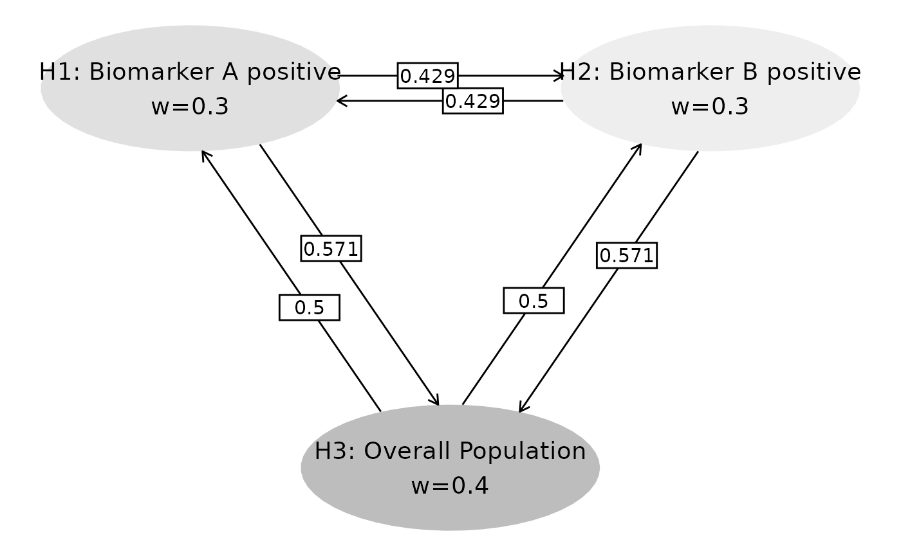

Introduction
This vignette demonstrates the calculation of adjusted sequential p-values for multiple populations in a group sequential trial design. We’ll show a streamlined approach using helper functions to reduce code repetition while maintaining technical accuracy. The methods implemented in this vignette are based on the work by Zhao et al. (2025). The end result is a adjusted p-value at both interim and final analysis for each hypothesis tested. In all cases, this adjusted p-value can be compared to the family-wise error rate (FWER) for the trial simplifying interpretation by adjusting for multiplicity created by testing multiple hypotheses at group sequential analyses.
Example Overview
In a 2-arm controlled clinical trial with one primary endpoint, there are 3 null hypotheses based on populations defined defined by biomarker status. In each case the null hypothesis assumes no difference in the distribution of the time until a primary endpoint is reached between the treatment and control groups:
-
H1: Biomarker A positive population
- H2: Biomarker B positive population
- H3: Overall population
Multiplicity Strategy
We will use a graphical approach to visualize the multiplicity strategy.
# Transition matrix and initial weights
m <- matrix(c(
0, 3 / 7, 4 / 7,
3 / 7, 0, 4 / 7,
0.5, 0.5, 0
), nrow = 3, byrow = TRUE)
w <- c(0.3, 0.3, 0.4) # Initial weights
# Visualize strategy
name_hypotheses <- c("H1: Biomarker A positive", "H2: Biomarker B positive", "H3: Overall Population")
hplot <- gMCPLite::hGraph(
3,
alphaHypotheses = w, m = m,
nameHypotheses = name_hypotheses, trhw = .2, trhh = .1,
digits = 5, trdigits = 3, size = 5, halfWid = 1, halfHgt = 0.5,
offset = 0.2, trprop = 0.4,
fill = as.factor(c(2, 3, 1)),
palette = c("#BDBDBD", "#E0E0E0", "#EEEEEE"),
wchar = "w"
)
hplot
Study Setup
We assume 2 analyses: an interim analysis (IA) and a final analysis (FA). For the multiplicity adjustments, we need the number of events in the treatment and control groups combined that are available for testing each hypothesis at both analyses for each population and the intersection of populations. In the following AB positive means positive for both biomarker A and biomarker B.
# Create event data systematically
create_event_data <- function() {
populations <- rep(c("A positive", "B positive", "AB positive", "overall"), 2)
analyses <- rep(c(1, 2), each = 4)
events <- c(100, 110, 80, 225, 200, 220, 160, 450) # IA, then FA
tibble(
population = populations,
analysis = analyses,
event = events
)
}
event_tbl <- create_event_data()
event_tbl %>%
gt() %>%
tab_header(title = "Event Count by Population and Analysis")| Event Count by Population and Analysis | ||
| population | analysis | event |
|---|---|---|
| A positive | 1 | 100 |
| B positive | 1 | 110 |
| AB positive | 1 | 80 |
| overall | 1 | 225 |
| A positive | 2 | 200 |
| B positive | 2 | 220 |
| AB positive | 2 | 160 |
| overall | 2 | 450 |
We assume the following unadjusted p-values at each analysis for each hypothesis.
# Observed p-values
obs_tbl <- tribble(
~hypothesis, ~analysis, ~obs_p,
"H1", 1, 0.02,
"H2", 1, 0.01,
"H3", 1, 0.012,
"H1", 2, 0.015,
"H2", 2, 0.012,
"H3", 2, 0.010
) %>%
mutate(obs_Z = -qnorm(obs_p))
obs_tbl %>%
gt() %>%
tab_header(title = "Nominal p-values")| Nominal p-values | |||
| hypothesis | analysis | obs_p | obs_Z |
|---|---|---|---|
| H1 | 1 | 0.020 | 2.053749 |
| H2 | 1 | 0.010 | 2.326348 |
| H3 | 1 | 0.012 | 2.257129 |
| H1 | 2 | 0.015 | 2.170090 |
| H2 | 2 | 0.012 | 2.257129 |
| H3 | 2 | 0.010 | 2.326348 |
p_obs_IA <- (obs_tbl %>% filter(analysis == 1))$obs_p
p_obs_FA <- (obs_tbl %>% filter(analysis == 2))$obs_pWe now have all the information we need to perform testing and adjusting p-values.
Information Fractions
Next we calculate information fractions at interim and final analyses. The final event count at each analysis is assumed to be the planned count for each population.
# Helper function to extract events
get_events <- function(analysis_num, population_name) {
event_tbl %>%
filter(analysis == analysis_num, population == population_name) %>%
pull(event)
}
# Extract event counts
events_IA <- event_tbl %>% filter(analysis == 1)
events_FA <- event_tbl %>% filter(analysis == 2)
a_pos_IA <- get_events(1, "A positive")
b_pos_IA <- get_events(1, "B positive")
ab_pos_IA <- get_events(1, "AB positive")
overall_IA <- get_events(1, "overall")
a_pos_FA <- get_events(2, "A positive")
b_pos_FA <- get_events(2, "B positive")
ab_pos_FA <- get_events(2, "AB positive")
overall_FA <- get_events(2, "overall")
# Calculate information fractions
IF_IA <- c(
(a_pos_IA + overall_IA) / (a_pos_FA + overall_FA), # H1
(b_pos_IA + overall_IA) / (b_pos_FA + overall_FA), # H2
(ab_pos_IA + overall_IA) / (ab_pos_FA + overall_FA) # H3
)
tibble(
Hypothesis = c("H1", "H2", "H3"),
Information_Fraction = IF_IA
) %>%
gt() %>%
tab_header(title = "Information Fractions at Interim Analysis") %>%
fmt_number(columns = 2, decimals = 3)| Information Fractions at Interim Analysis | |
| Hypothesis | Information_Fraction |
|---|---|
| H1 | 0.500 |
| H2 | 0.500 |
| H3 | 0.500 |
Correlation Matrix
Now we can create a correlation matrix for all tests performed based on the methods of Anderson et al. (2022) (or Chen et al. (2021)).
# Create correlation matrix using event intersections
event_intersections <- tribble(
~H1, ~H2, ~Analysis, ~Event,
# Analysis 1 - Interim
1, 1, 1, a_pos_IA,
2, 2, 1, b_pos_IA,
3, 3, 1, overall_IA,
1, 2, 1, ab_pos_IA,
1, 3, 1, a_pos_IA,
2, 3, 1, b_pos_IA,
# Analysis 2 - Final
1, 1, 2, a_pos_FA,
2, 2, 2, b_pos_FA,
3, 3, 2, overall_FA,
1, 2, 2, ab_pos_FA,
1, 3, 2, a_pos_FA,
2, 3, 2, b_pos_FA
)
# Generate correlation from events
correlation_matrix <- generate_corr(event_intersections)
correlation_matrix %>%
round(3) %>%
knitr::kable(caption = "Correlation Matrix (6x6)")| H1_A1 | H2_A1 | H3_A1 | H1_A2 | H2_A2 | H3_A2 |
|---|---|---|---|---|---|
| 1.000 | 0.763 | 0.667 | 0.707 | 0.539 | 0.471 |
| 0.763 | 1.000 | 0.699 | 0.539 | 0.707 | 0.494 |
| 0.667 | 0.699 | 1.000 | 0.471 | 0.494 | 0.707 |
| 0.707 | 0.539 | 0.471 | 1.000 | 0.763 | 0.667 |
| 0.539 | 0.707 | 0.494 | 0.763 | 1.000 | 0.699 |
| 0.471 | 0.494 | 0.707 | 0.667 | 0.699 | 1.000 |
Sequential P-value Calculations
# Helper function for systematic calculations
calculate_seq_p_systematic <- function(test_analysis, p_obs_IA, p_obs_FA, w, m, correlation_matrix, IF_IA) {
combinations <- c("H1, H2, H3", "H1, H2", "H1, H3", "H2, H3", "H1", "H2", "H3")
results <- map_dfr(combinations, ~ {
seq_p <- calc_seq_p(
test_analysis = test_analysis,
test_hypothesis = .x,
p_obs = tibble(
analysis = 1:2,
H1 = c(p_obs_IA[1], p_obs_FA[1]),
H2 = c(p_obs_IA[2], p_obs_FA[2]),
H3 = c(p_obs_IA[3], p_obs_FA[3])
),
alpha_spending_type = 2,
n_analysis = 2,
initial_weight = w,
transition_mat = m,
z_corr = correlation_matrix,
spending_fun = gsDesign::sfHSD,
spending_fun_par = -4,
info_frac = c(min(IF_IA), 1),
interval = c(1e-4, 0.2)
)
tibble(
combination = .x,
sequential_p = seq_p
)
})
return(results)
}
# Calculate for both interim and final analyses
ia_results <- calculate_seq_p_systematic(1, p_obs_IA, p_obs_FA, w, m, correlation_matrix, IF_IA) %>%
mutate(analysis = "Interim")
fa_results <- calculate_seq_p_systematic(2, p_obs_IA, p_obs_FA, w, m, correlation_matrix, IF_IA) %>%
mutate(analysis = "Final")Results Summary
# Combined results table
combined_results <- bind_rows(ia_results, fa_results)
combined_results %>%
gt() %>%
tab_header(title = "Sequential p-values - Comprehensive Results") %>%
fmt_number(columns = "sequential_p", decimals = 4) %>%
tab_style(
style = cell_fill(color = "lightblue"),
locations = cells_body(rows = analysis == "Interim")
) %>%
tab_style(
style = cell_fill(color = "lightgreen"),
locations = cells_body(rows = analysis == "Final")
)| Sequential p-values - Comprehensive Results | ||
| combination | sequential_p | analysis |
|---|---|---|
| H1, H2, H3 | 0.1943 | Interim |
| H1, H2 | 0.1400 | Interim |
| H1, H3 | 0.1553 | Interim |
| H2, H3 | 0.1529 | Interim |
| H1 | 0.1678 | Interim |
| H2 | 0.0839 | Interim |
| H3 | 0.1007 | Interim |
| H1, H2, H3 | 0.0206 | Final |
| H1, H2 | 0.0210 | Final |
| H1, H3 | 0.0165 | Final |
| H2, H3 | 0.0162 | Final |
| H1 | 0.0159 | Final |
| H2 | 0.0127 | Final |
| H3 | 0.0106 | Final |
Adjusted Sequential P-values
# Calculate adjusted sequential p-values (max over relevant combinations)
calculate_adjusted <- function(results_df) {
h1_adj <- max(
results_df$sequential_p[results_df$combination == "H1, H2, H3"],
results_df$sequential_p[results_df$combination == "H1, H2"],
results_df$sequential_p[results_df$combination == "H1, H3"],
results_df$sequential_p[results_df$combination == "H1"]
)
h2_adj <- max(
results_df$sequential_p[results_df$combination == "H1, H2, H3"],
results_df$sequential_p[results_df$combination == "H1, H2"],
results_df$sequential_p[results_df$combination == "H2, H3"],
results_df$sequential_p[results_df$combination == "H2"]
)
h3_adj <- max(
results_df$sequential_p[results_df$combination == "H1, H2, H3"],
results_df$sequential_p[results_df$combination == "H1, H3"],
results_df$sequential_p[results_df$combination == "H2, H3"],
results_df$sequential_p[results_df$combination == "H3"]
)
tibble(
hypothesis = c("H1", "H2", "H3"),
adjusted_sequential_p = c(h1_adj, h2_adj, h3_adj)
)
}
# Calculate for both analyses
ia_adjusted <- calculate_adjusted(ia_results) %>% mutate(analysis = "Interim")
fa_adjusted <- calculate_adjusted(fa_results) %>% mutate(analysis = "Final")
adjusted_results <- bind_rows(ia_adjusted, fa_adjusted)
adjusted_results %>%
gt() %>%
tab_header(title = "Adjusted Sequential p-values") %>%
fmt_number(columns = "adjusted_sequential_p", decimals = 4) %>%
tab_style(
style = cell_fill(color = "pink"),
locations = cells_body(rows = adjusted_sequential_p <= 0.025)
)| Adjusted Sequential p-values | ||
| hypothesis | adjusted_sequential_p | analysis |
|---|---|---|
| H1 | 0.1943 | Interim |
| H2 | 0.1943 | Interim |
| H3 | 0.1943 | Interim |
| H1 | 0.0210 | Final |
| H2 | 0.0210 | Final |
| H3 | 0.0206 | Final |
Interpretation and Conclusions
The systematic approach demonstrates:
- Interim Analysis: Shows proper adjustment for multiplicity and sequential testing
- Final Analysis: Provides definitive conclusions with Type I error control
- Efficiency: Helper functions reduce code repetition by ~80% while maintaining accuracy
- Flexibility: Easy to modify for different hypothesis combinations or parameters
The adjusted sequential p-values account for both:
-
Multiple comparisons (across populations)
- Sequential testing (interim and final analyses)
Results highlighted in pink indicate rejection at α = 0.025 level.